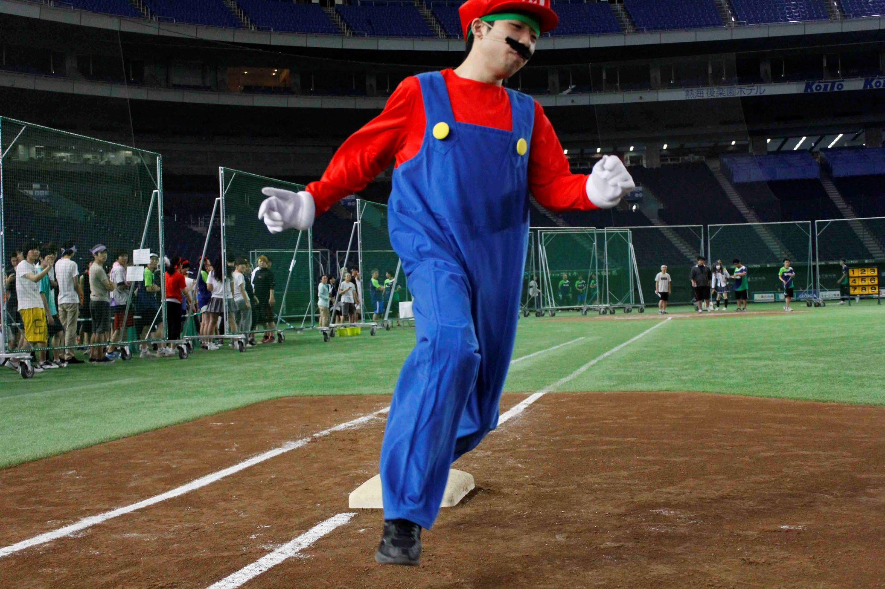

イベント・競技
スポーツフェスティバルには、メイン会場で行われる得点種目の「一般競技」と、保護者の方も参加できる「自由参加競技」そして、東京ドームならではの「アトラクション競技」があります。 スポーツフェスティバルでしか体験できない競技も盛りだくさんなので、ぜひ参加してください！
一般競技 10:30～
クラス対抗リレー
(予選)
スポーツフェスティバル唯一のクラス対抗戦です。チームの編成は１クラス５人で 、男子の部と女子の部に分かれて 行います。全力で盛り上がりましょう！
オープニング競技
クラス対抗リレーは予選、準決勝（男子のみ）、決勝に分けています。
男女ともにクラス対抗リレーの予選はオープニングに参加します。
予選はスポフェスの最初の競技の一つなので、クラス対抗リレーの出演者は当日の流れが以下の通りです。
- クラスの1番先に入場する。速やかに着替えて、アリーナに集合
- アリーナ西側にて受付を行う
- 走者ごとの集合場所へ移動する
- 10：00オープニングセレモニー開始
各走者の周回数
- 予選：男子女子ともに全走者トラック半周
- 準決勝：男子のみ 123走者のみトラック半周。４５走者はトラック１周
- 決勝：男子全走者トラック１周。女子は全走者トラック半周
クラス対抗リレー
(準決勝)
予選を勝ち抜いた強靭な選手たちが今まで以上に白熱した走りを見せてくれる！クラス一丸となって選手を応援しよう！
この競技のトップへクラス対抗リレー
(決勝)
クラス対抗リレーもついに決勝戦！優勝クラスには校長杯と豪華景品が用意されている。クラス一丸となって戦いを盛り上げよう！
この競技のトップへ引っぱれ!!
(綱引き)
運動会といえば綱引き！自陣に縄を引き寄せたチームが勝利というシンプルなルール！1回戦は2本先取、2回戦/決勝は1本先取。すべて20秒で勝負が決まります！
遊び方
各色それぞれ50人によるこの競技は、一回戦が2本先取、二回戦、決勝を1本先取とし、すべて20秒での勝負になります。
この競技のトップへ運命共同体
(二人三脚)
ネットや悪路、輪潜りなどの障害物を二人でクリアしていく色別対抗の競技。運動が苦手でも楽しめ、二人の絆が試される！
遊び方
2人の足をバンドで結びつけて、障害物をクリアしていく2人3脚障害物競争です。各色１５組３０名が出場します。
この競技のトップへTHE 決戦!! (騎馬戦)
各色4人1組を1騎とし、各色10騎（40人）による色別対抗の騎馬戦で、スポフェスで一番激しい競技。相手の風船を割って勝利を掴もう！
遊び方
各色4人1組を1騎とし、各色10騎（40人）による色別対抗の騎馬戦です。 競技はトーナメント方式で行い、勝ち上がったチームにそれぞれポイントが加算されます。勝敗はヘルメットについている風船が取られた（落ちた・割れた・外れた）時点で失格となり、競技終了時に残っている騎馬の数を競いますから最後までつぶれないように！各試合時間は30秒の1本勝負です。会場を2箇所にわけて、同時進行で消化していきます。空時間に風船を付け直すこと。
この競技のトップへなわ取り合戦
(縄取り)
グラウンド中央に配置された沢山の縄を取り合う競技。制限時間内に自陣へ多く持ち込んだチームが勝利となる。運動神経だけでなくチーム力が試される！
遊び方
各色それぞれ40人によるこの競技は一回戦を３０秒２本、二回戦以降は３０秒１本行い、獲得本数の多いチームの勝利となります。またリボンを巻いた高得点のなわを一本用意し、同点の場合はその縄が、あるほうを勝利とします。
この競技のトップへだるま神輿
(だるま運びリレー)
神輿の上にだるまを六段積み重ねて行うリレー。チームのバランス感覚が試される競技。だるまは軽量なので誰でも活躍することができる。
遊び方
だるまのパーツは各走者（２、４、６、８、１０走）に配布されるので、最初頭だけから、徐々に高くなります。またダルマを手で支えるのは禁止です。
この競技のトップへ一球入魂 (玉入れ)

４チームが同時に玉が置いてある中央に一斉に集まり、それぞれの色の籠に向かって投擲。籠に入った数で勝敗が決まる。
遊び方
各色200個づつ、色を混ぜて散らかしてある玉を持ってきてから、自分のカゴの色と同じ色玉を持ってきてから、玉入れを行う。
この競技のトップへ玉げた (大玉送り)
全学生が出場する唯一の競技。大玉を運んでその速さを競う。大玉を協力して運び、チームを勝利へ導こう！今年は速さと正確さも必要だ！
遊び方
スタート地点のコーンに大玉を戻したところでゴールとなります。チャンスは1回。トラックの四隅にはダルマが設置されています。このダルマの外側を通すこと。制限時間2分のタイムレースで行います。
この競技のトップへ色別対抗リレー
各色から選ばれた10人の選手たちが熾烈な戦いを見せる最後の競技。結果によっては総合成績が大きく変わる。最後まで目が離せない！
遊び方
1レース決勝となります。各色から選抜メンバーを集めて行う色別対抗のリレーです。各色より10名の代表選手を選出し、1～9走迄は1人半周、アンカーは1周走ります。
この競技のトップへ
自由参加種目
12:30ごろ～
誰でも参加できる自由参加種目の紹介です！
ショートダッシュ
選手権
床に伏せた状態から走り出し、30mの距離を全力で駆け抜ける競技。どれだけ早く起き上がれるかがカギ！男女それぞれの日本電子最速を決める！ 短距離走に自信がある方はぜひ参加してみよう！
エントリー方法
当日、指示があったら召集場所に集まってください。
この競技のトップへ電子学園
ウルトラクイズ

主要競技の合間に開催される日本電子専門学校にまつわる「○×クイズ」です。徐々に上がっていく難易度に屈せず君は最後まで残ることができるか！？ 気軽に参加してみよう！
この競技のトップへ応援団長は君だ！
競技の合間に不定期に開催されるエキシビジョン種目です。勝利条件は人より目立つこと！競技が始まったらカメラに向かってアピール開始！アナウンサーの独断と偏見により勝利者が決定します！勝利者には豪華景品も！！ 運動が苦手な人もぜひ参加してみてください。
この競技のトップへアトラクション種目
東京ドームは野球の施設なので、東京ドームにしかできない体験をやってみませんか？
こちらは東京ドームならではのアトラクション種目を紹介します！
ストラックアウト
数字が書かれたストラックボードに向かって制限時間2分以内に5球を投球し、開けた的の数と開始から終了までのタイムを競う。東京ドームのマウンドから投球するチャンス！
この競技のトップへスピードガン
一番早い球を持ってこい！
ホームベース前に設置されたスピードガンに向かってボールを投げて球速を競う。1人2球、より早いほうが記録となる。憧れのあの選手の球速を目指してみたり...？野球好きにオススメの競技！
ベースラニング

ホームランを走ろう！
バッターボックスから走り出し、約110mのダイヤモンドを一周しホームベースを踏んだときのゴールタイムを競う。東京ドームのホームベースが踏める唯一の競技なのでぜひ参加してみては！